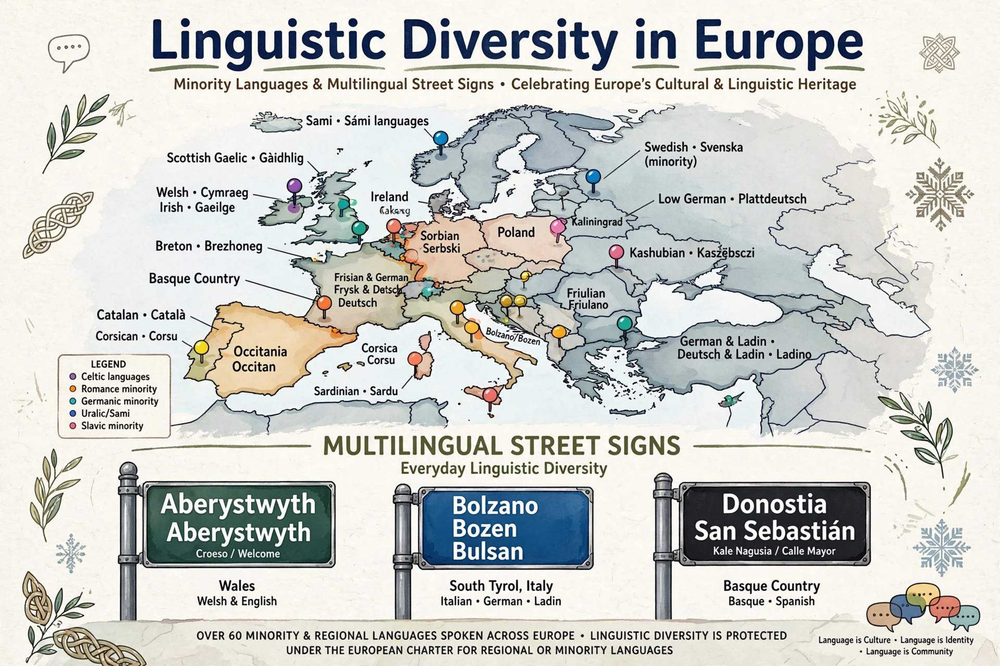

A minority language is a language spoken by a minority of the population within a territory. Such languages may be indigenous to the region, or brought by immigrant communities, and frequently lack official status or institutional support, placing many at risk of decline or extinction as speakers shift to a dominant language.

| Examples | Welsh in Wales, Basque in Spain/France, Kurdish, Sámi languages |
|---|---|
| Key instrument | European Charter for Regional or Minority Languages (1992) |
Definitions vary by jurisdiction: the Council of Europe's Charter defines regional or minority languages as those traditionally used within a state's territory by a smaller group of nationals, excluding dialects of the official language and the languages of recent immigrants. A minority language can be numerically dominant locally yet subordinate nationally, and an official language elsewhere — as Hungarian is in Romania's minority communities.
International instruments including the UN Declaration on the Rights of Persons Belonging to Minorities (1992) and the Framework Convention for the Protection of National Minorities recognise rights to use, learn and teach minority languages. Policies range from assimilationist suppression to co-official status, minority-language schooling and media — as in Wales, Catalonia and New Zealand (Māori).
UNESCO estimates a language disappears roughly every two weeks. Revitalisation efforts — immersion schools, master-apprentice programmes and digital corpora — have revived languages such as Welsh, Basque and Hawaiian, though most of the world's roughly 7,000 languages remain vulnerable. See endangered language and language policy.